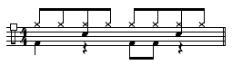
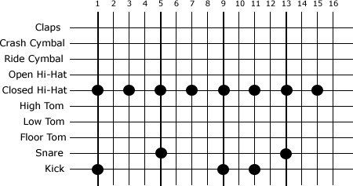
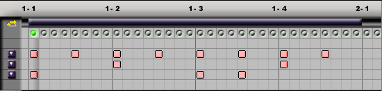
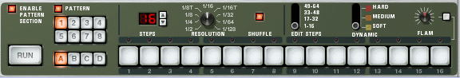

For centuries, musicians have organized and written musical ideas using the bars and beats as a way of representing time. One of the big advantages of using a sequencer in music production is that it allows us to record and edit performances the same way musicians think: in bars and beats.
Imagine that you're a producer working with a band in a session, and at one point while recording a "take," you hear a mistake. What would happen if you brought this up, saying you heard someone lose the beat 2 minutes, 18 seconds into the song? Would anyone know where you were talking about? If you said "I heard someone slow down in the second chorus, third measure," everyone would know exactly what point in the song you were referring to.
Although we think of musical time in bars and beats, we usually also organize any piece of music into some sort of musical form. In the example above, it's much easier to think about musical sections as well as bars and beats. A musician will recognize sections of a song by identifying sections like: verse, chorus and bridge much easier than using just bars and beats.
Sequencers are designed to allow musicians to think about time musically. Keeping this in mind, there are two ways to organize sequenced material.
Pattern oriented sequencing allows the user to sequence smaller repeating sections of a song into patterns that are strung together in various ways that build up larger musical forms. This is how drum machines and many types of hardware sequencers work. Drums machines are actually an early example of a sequencer. Early drum machines had a limited amount of memory. Since the drum parts in a pop song are often made up of a few basic patterns that repeat, we can save a great deal of memory by only sequencing a few patterns and repeating them when needed. This no doubt supported the "more is less" thinking that went into many drum tracks recorded in the early to mid-'80s with groups like the Talking Heads and Prince. We see this aesthetic continue with the current crop of rap, hip hop and dance producers, from Dallas Austin to BT, all using a variety of grooveboxes in their work.
Linear sequencing organizes a song in a score format, where where every note in a performance is recorded, and each measure of music has a corresponding measure in a sequencer. This really only became possible once personal computers began to be used for sequencing. Using the memory built into the host machine offers a greater capacity to store each event in an entire song in its own, unique location.
In this week's lesson we'll be looking at both approaches to sequencing using Reason, starting with step-time pattern sequencing and then real-time linear sequencing.
Although musicians typically use standard notation to write out musical parts, drum machines store individual drum attacks on a grid. Each position on the grid is called a step. It's often easier to visualize drum parts on a grid. In fact many types of drum machines allow the user to program parts directly to a grid. We'll be looking at Redrum,the virtual drum machine in Reason, as an example of how this works.

Standard notation of a simple eighth note drum part

Grid notation of the same drum part

The drum part displayed in a MIDI sequencer's drum editor

Step interface in ReDrum